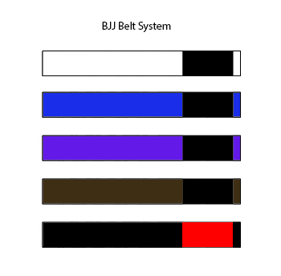

El jiu-jitsu brasileño (o BJJ) es un arte marcial, deporte de combate y sistema de defensa personal desarrollado en Brasil. Se centra principalmente en la lucha cuerpo a cuerpo en el suelo, usando para ello luxaciones, estrangulaciones, inmovilizaciones y derribos. El principal objetivo del jiu-jitsu brasileño es someter al rival mediante una luxación o estrangulación sin necesidad de usar golpes, de ahí que se le denomine a veces "arte suave". Estas técnicas tienen su origen en el judo japonés, particularmente en su apartado de lucha en suelo conocido como ne waza, llevado a Brasil por los maestros Mitsuyo Maeda y Geo Omori.
El jiu-jitsu brasileño tiene un sistema de graduación el cual otorga cinturones de colores para indicar el nivel de conocimientos técnicos y habilidades prácticas desarrolladas. La estructura del sistema es semejante a la del judo y proviene de este.
